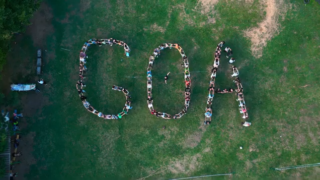

სია 1
- ვეფხვი
- თხა
- ლომი
- გველი
- ხვლიკი
- ბაყაყი
- გოჭი
- ძაღლი
- კატა
- კუ
სია 2
ძროხა
ბეკეკა
ცხენი
სპილო
ობობა
თაგვი
წრუწუნა
თახვი
ნიანგი
ზაზუნა
- click here
- 
- click here for youtube
ჩემი ტოპ 3 საყვარელი კერძები
მწვადი
ხინკალი
სალათა
ჩემი ტოპ 3 თამაში
კალათბურთი
ფეხბურთი
ფორმულა 1
ჩემი ტოპ 4 ქვეყანა
საქართველო
ამერიკა
ჩინეთი
გერმანია